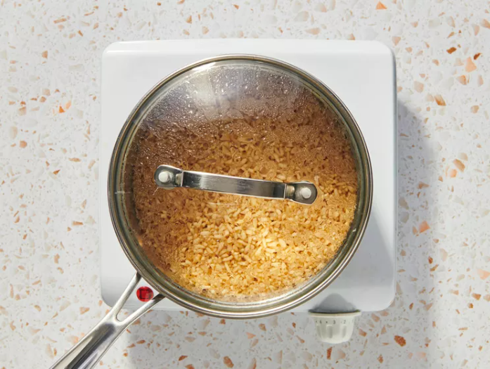
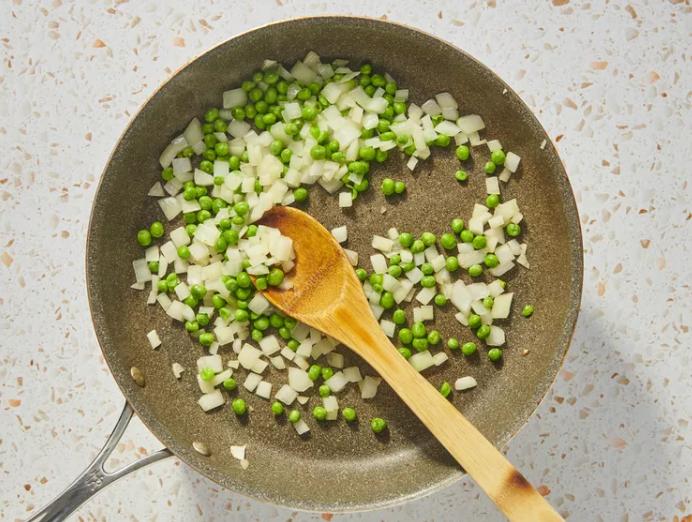
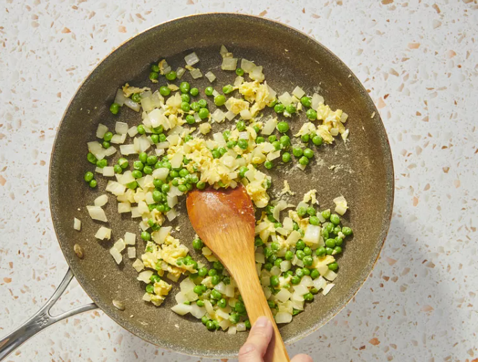

Step 1
Gather all ingredients.
 Next →
Next →
Step 2
Bring water, soy sauce, and salt to a boil in a medium saucepan. Stir in instant rice and remove from heat. Cover and let stand for 5 minutes.
 ← Back Next →Step 3
Heat oil in a medium skillet or wok over medium heat. Sauté onions and green beans or peas in hot oil for 2 to 3 minutes.
 ← Back Next →Step 4
Pour in beaten egg and fry for 2 minutes, scrambling egg while it cooks.
 ← Back Next →Step 5
Add cooked rice to egg mixture; mix well. Season with pepper.